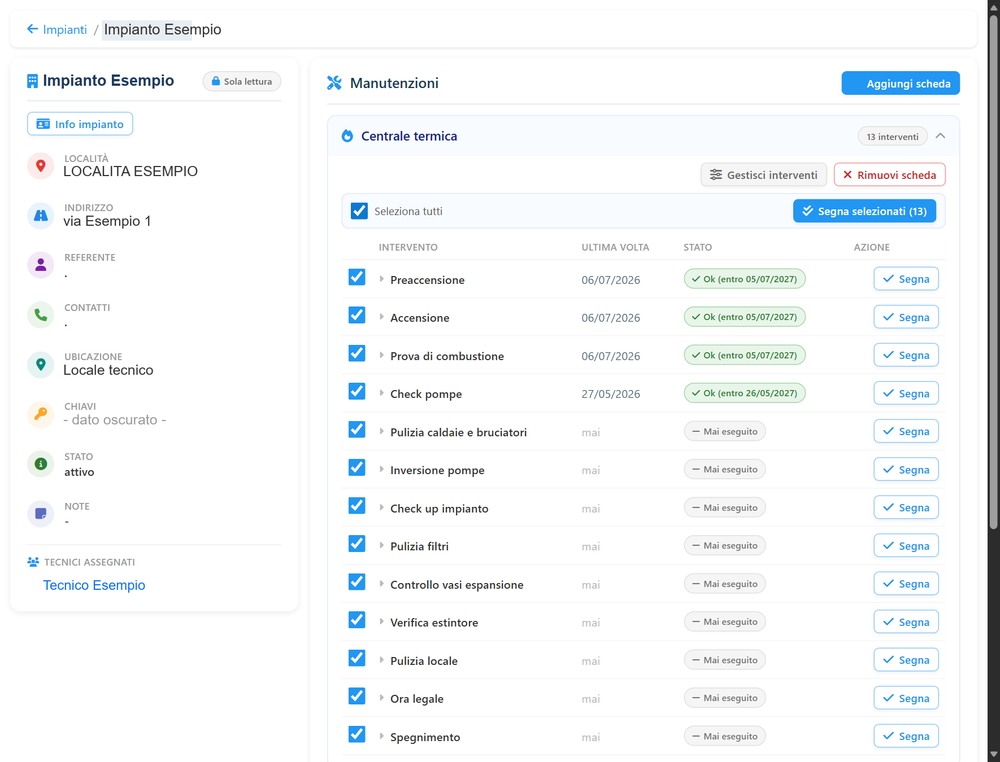
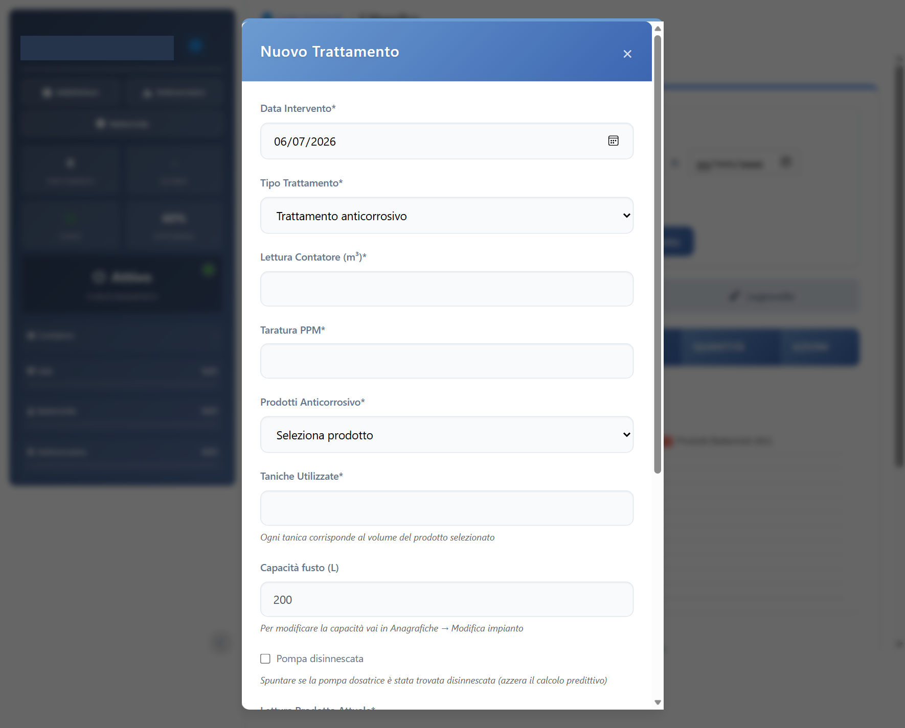
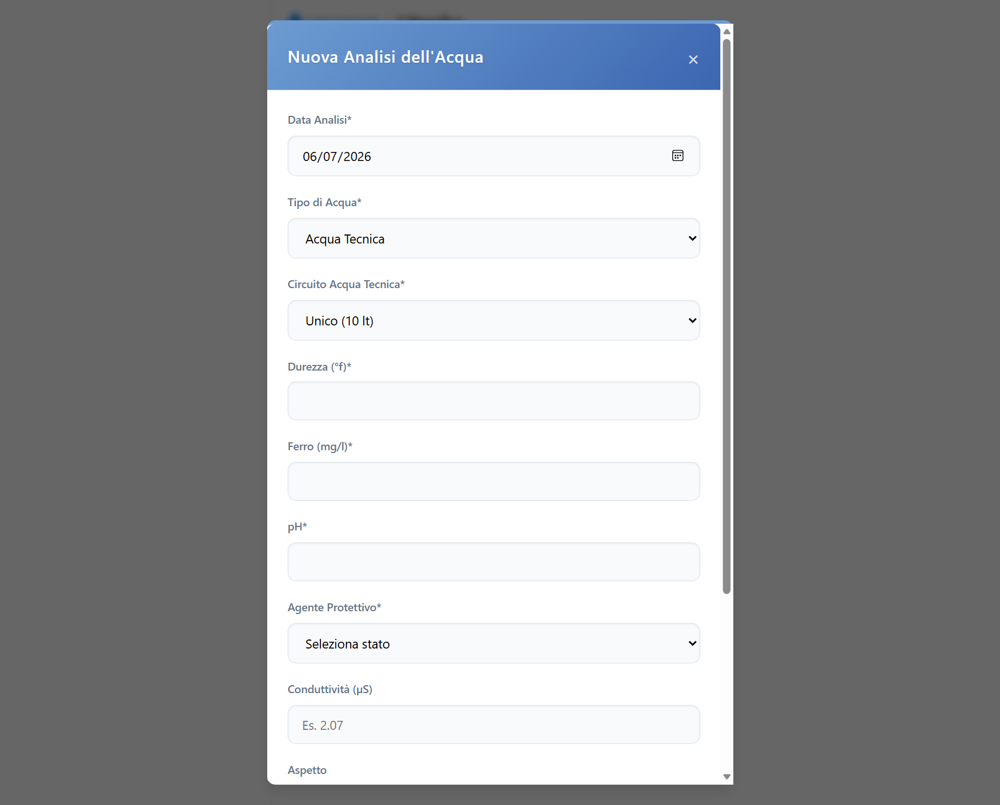

Registrare
Interventi e rilevazioni diventano uno storico consultabile per impianto.
Un unico posto per conoscere gli impianti, registrare gli interventi, seguire i trattamenti acqua e capire quando intervenire. Con assistenti specializzati che aiutano il tecnico a trovare le informazioni giuste.
Prodotto in uso · dati aggregati verificati nel progetto al 26 settembre 2026
Anagrafiche, manutenzioni, misure dell'acqua, dosaggi, bombole F-Gas e manuali tecnici vivono in flussi diversi. TECHAI li porta nel lavoro quotidiano del tecnico, così la storia di ogni impianto può guidare la prossima decisione.
Interventi e rilevazioni diventano uno storico consultabile per impianto.
I consumi dei prodotti di trattamento diventano livelli, autonomie e anomalie.
Il tecnico vede cosa richiede attenzione e trova il contesto per intervenire.
Anagrafica, assegnazioni, manutenzioni e trattamenti nello stesso percorso operativo.
Le rilevazioni e le attività del tecnico alimentano uno storico ordinato.
Per i trattamenti supportati, TECHAI mostra l'autonomia stimata e richiama l'attenzione sugli scostamenti.
Scadenze manutentive e segnali sui trattamenti aiutano a decidere dove concentrare il lavoro.
TECHAI è un gestionale in uso per tecnici di impianti termici e idrici. Esplora le aree del prodotto e il percorso con cui i dati e la conoscenza diventano utili sul campo.
La scheda raccoglie dati tecnici, manutenzioni e storico degli interventi. Le attività periodiche mostrano ultima esecuzione e stato; più interventi possono essere registrati insieme.

Il tecnico registra trattamenti e analisi. TECHAI segue l'andamento dei prodotti negli impianti supportati, stima l'autonomia e segnala gli scostamenti che meritano attenzione.


E.V.A. è il punto d'ingresso. TECO e IDRA intervengono su manuali e acqua. Nel ramo di sviluppo si aggiunge NORMA per le domande su leggi e norme tecniche, con risposte legate ai documenti disponibili. Le verifiche professionali restano indispensabili.
Aiuta a consultare informazioni sugli impianti e le registrazioni, e accompagna alcune attività di compilazione.
Risponde su guasti e procedure usando i manuali caricati, con riferimento alle fonti quando disponibili.
Aiuta a valutare analisi, stato dei trattamenti, dosaggi e prodotti nel contesto degli impianti.
Aiuta a cercare risposte nei testi normativi caricati, mostrando le fonti e segnalando quando non bastano.
Bombole, movimenti, trasferimenti e interventi cliente in un modulo dedicato.
Campionamenti, esiti, azioni correttive e rilievi successivi nella scheda sanitaria.
Schede prodotto, PDF collegati e ricerca delle informazioni tecniche.
Accesso a calcolatori e contenuti formativi integrati nel portale.
I numeri qui sotto descrivono lo stato della copia di produzione verificata nel progetto il 26 settembre 2026. Sono volumi operativi, non ricavi o misure di mercato.
Gestionale V1 in produzione, usato con dati operativi reali.
Una V2 è stata progettata. Le scelte architetturali sono documentate; lo sviluppo del codice non è ancora iniziato.
TECHAI parte da un problema operativo preciso e da un prodotto già usato sul campo. L'opportunità è consolidare il sistema, misurarne l'impatto e prepararlo a una crescita verificabile.
Impianti, manutenzioni, trattamento acqua, documenti e assistenza nello stesso ambiente di lavoro.
Le rilevazioni ripetute permettono di stimare consumi e priorità sui trattamenti, senza promettere diagnosi automatiche universali.
La riprogettazione è documentata. La sua realizzazione e i risultati economici richiedono ancora validazione.
Su richiesta sono disponibili una presentazione del prodotto, una dimostrazione guidata e il confronto su roadmap, metriche economiche e condizioni di investimento.
Se lavori nel settore, vuoi valutare una partnership o stai considerando un investimento, contatta il progetto e indica il tuo interesse. Possiamo partire da una dimostrazione concreta dell'app.
Una dimostrazione dell'app può essere concordata direttamente con il progetto.